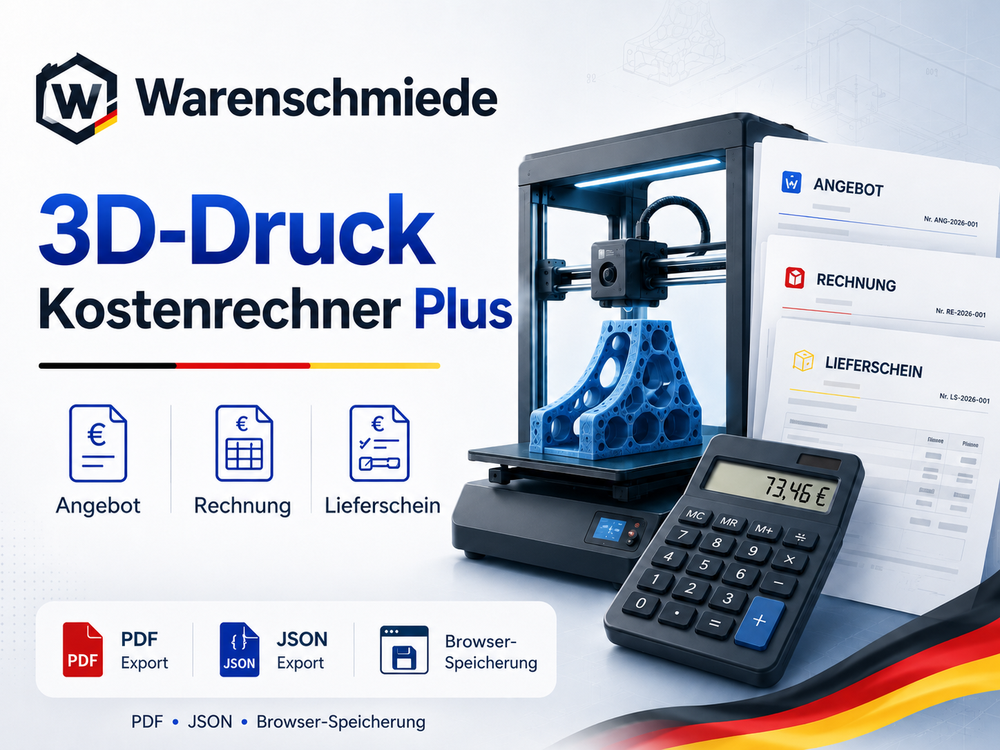
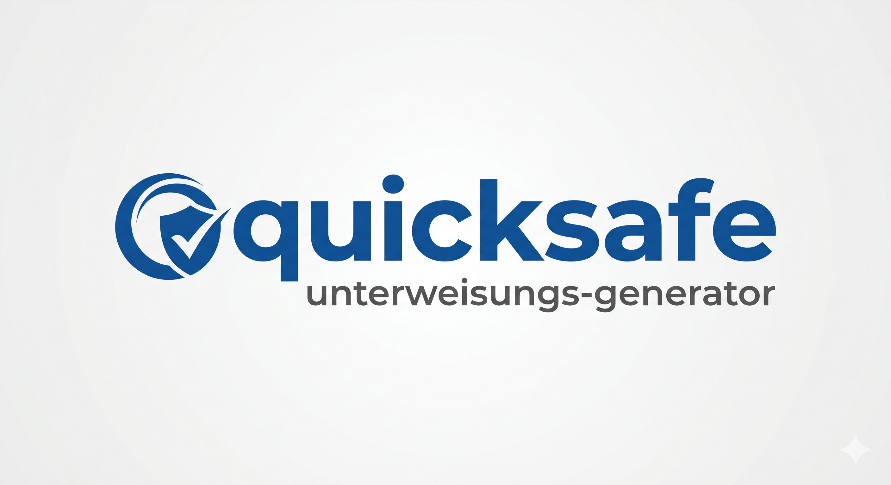

3D-Druck Kostenrechner Plus
Online-Kalkulation für Angebote, Rechnungen und Lieferscheine. Mit Presets, History, JSON, PDF/Druckausgabe und Prüfmodus.
Online Tools · Verbindungsstand v47
Hier findest du die wichtigsten Browser-Tools und downloadbaren Helfer der Warenschmiede. In dieser 2.0-Basis werden die Tools zuerst sauber verbunden — die optische Anpassung der einzelnen Tools kommt später Schritt für Schritt.
Hauptwerkzeuge
Die wichtigsten Werkzeuge zuerst: online starten oder über die Downloadseite beziehen.

Online-Kalkulation für Angebote, Rechnungen und Lieferscheine. Mit Presets, History, JSON, PDF/Druckausgabe und Prüfmodus.

Portables Windows-Tool für mehrsprachige Unterweisungsnachweise mit HTML-Vorschau und PDF-Ausgabe.
All-in-One-Zentrale für Kundenverwaltung, Kalkulation und PDF-Erstellung. Lokal auf dem PC.
Browser-Tools
Bestehende Tools werden hier zuerst sauber verlinkt. Design-Angleichung kommt später separat.
QR-Codes, WLAN, Links und weitere Code-Helfer direkt im Browser.
Schlichte Zeiterfassung als Browser-Tool. Praktisch für Arbeitszeiten und einfache Übersichten.
Digitale Quittungen und Belege direkt im Browser erstellen.
Bilder lokal umwandeln, vorbereiten und für Webseiten oder Tools passend machen.
Metall, Maße, Schnittdaten und praktische Helfer für Werkstatt und Fertigung.
Schnelle Winkel- und Geometriehilfe für Konstruktion, Zuschnitt und Werkstatt.
Fertigung & CNC
Einrichtblätter, Maschineninfos, Nullpunkte und praktische Fertigungsdokumentation.
webseite_2_0/tools/ liegt, zeigt der Button noch ins Leere.